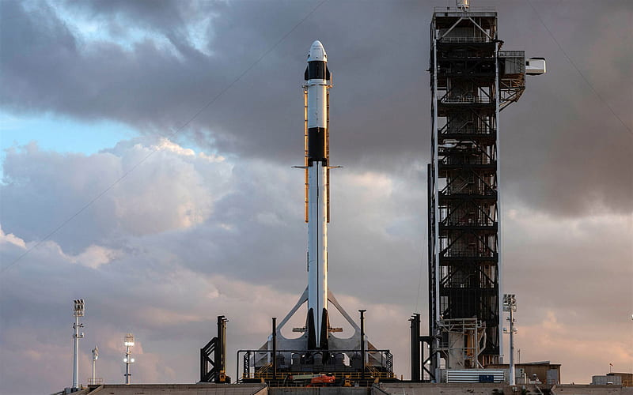
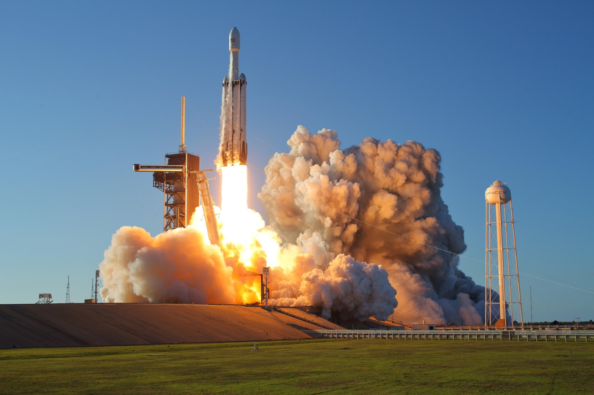
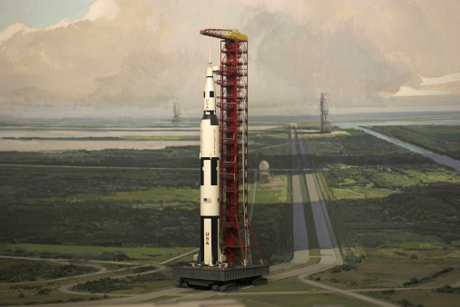
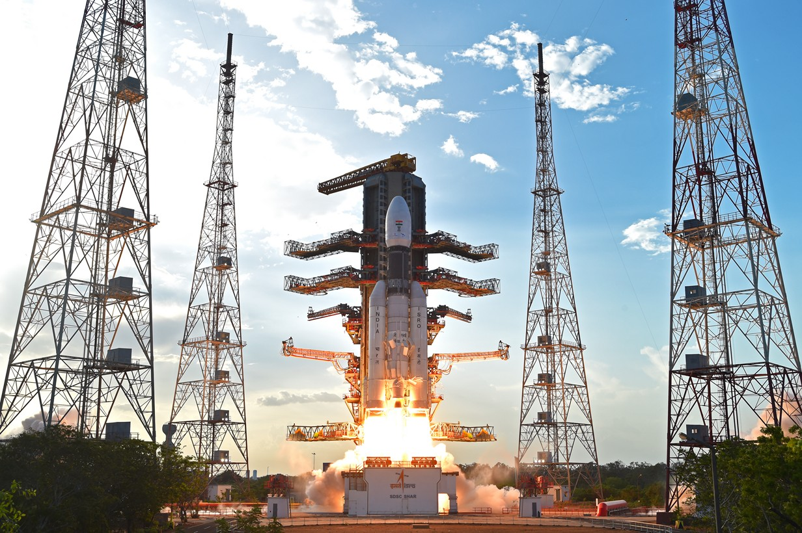
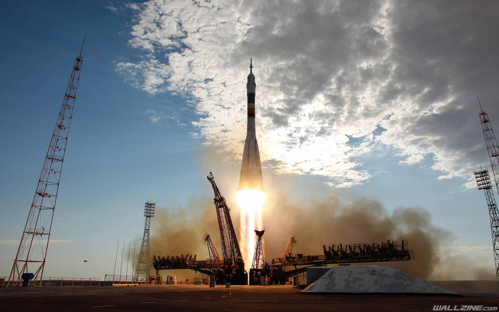

I. Love. Rockets.
I think rockets are the coolest things to ever exist. They're an engineering marvel.
The vessel that'll help humanity expand sentient life. Activity in the space exploration side of things
has been really picking up so here I'll show you my top picks and tell a little about each one of them.
Some Cool Rocket Cards
Falcon-9

Falcon 9 is a partially reusable two-stage-to-orbit medium-lift launch vehicle designed and manufactured by SpaceX in the United States. The latest version of the first stage can return to Earth and be flown again multiple times
Launches To Date: 139
Falcon Heavy

Falcon Heavy is a partially reusable heavy-lift launch vehicle designed and manufactured by SpaceX. It is derived from the Falcon 9 vehicle and consists of a strengthened Falcon 9 first stage as the center core with two additional Falcon 9 first stages serving as strap-on boosters.
Launches To Date: 3
Saturn-V

Saturn V was an American human-rated super heavy-lift launch vehicle used by NASA between 1967 and 1973. A three-stage, liquid-fueled rocket, the Saturn V was developed under the Apollo program for human exploration of the Moon and was later used to launch Skylab, the first American space station.
Launches To Date: 13
GSLV-MK3

The Geosynchronous Satellite Launch Vehicle Mark III, also referred to as the Launch Vehicle Mark 3, is a three-stage medium-lift launch vehicle developed by the Indian Space Research Organisation.
Launches To Date: 4
Soyuz

Soyuz is a series of spacecraft which has been in service since the 1960s, having made more than 140 flights. It was designed for the Soviet space program by the Korolev Design Bureau. The Soyuz succeeded the Voskhod spacecraft and was originally built as part of the Soviet crewed lunar programs.
Launches To Date: 1680
Starship

Starship is a fully-reusable and super heavy-lift launch vehicle in development by SpaceX. Both of its stages – Super Heavy booster and Starship spacecraft – use liquid oxygen and liquid methane as propellant. Starship's main features are its very high payload mass capability and low potential operating cost.
Prototypes Launched: 7
“We are finite, in that we are a product and source of the infinite.”
- Ilyas Kassam.